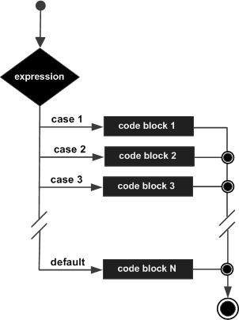

JavaScript is a dynamic computer programming language. It is lightweight and most commonly used as a part of web pages, whose implementations allow client-side script to interact with the user and make dynamic pages. It is an interpreted programming language with object-oriented capabilities.
JavaScript was first known as LiveScript, but Netscape changed its name to JavaScript, possibly because of the excitement being generated by Java. JavaScript made its first appearance in Netscape 2.0 in 1995 with the name LiveScript. The general-purpose core of the language has been embedded in Netscape, Internet Explorer, and other web browsers.
The ECMA-262 Specification defined a standard version of the core JavaScript language
Client-side JavaScript is the most common form of the language. The script should be included in or referenced by an HTML document for the code to be interpreted by the browser.
It means that a web page need not be a static HTML, but can include programs that interact with the user, control the browser, and dynamically create HTML content.
The JavaScript client-side mechanism provides many advantages over traditional CGI server-side scripts. For example, you might use JavaScript to check if the user has entered a valid e-mail address in a form field.
The JavaScript code is executed when the user submits the form, and only if all the entries are valid, they would be submitted to the Web Server.
JavaScript can be used to trap user-initiated events such as button clicks, link navigation, and other actions that the user initiates explicitly or implicitly.
The merits of using JavaScript are −
We cannot treat JavaScript as a full-fledged programming language. It lacks the following important features −
Once again, JavaScript is a lightweight, interpreted programming language that allows you to build interactivity into otherwise static HTML pages.
One of major strengths of JavaScript is that it does not require expensive development tools. You can start with a simple text editor such as Notepad. Since it is an interpreted language inside the context of a web browser, you don't even need to buy a compiler.
To make our life simpler, various vendors have come up with very nice JavaScript editing tools. Some of them are listed here −The ECMAScript Edition 5 standard will be the first update to be released in over four years. JavaScript 2.0 conforms to Edition 5 of the ECMAScript standard, and the difference between the two is extremely minor.
The specification for JavaScript 2.0 can be found on the following site: http://www.ecmascript.org/
Today, Netscape's JavaScript and Microsoft's JScript conform to the ECMAScript standard, although both the languages still support the features that are not a part of the standard.
Like many other programming languages, JavaScript has variables. Variables can be thought of as named containers. You can place data into these containers and then refer to the data simply by naming the container.
Before you use a variable in a JavaScript program, you must declare it. Variables are declared with the var keyword as follows.
<script type = "text/javascript"> <!-- var money; var name; //--> </script>
You can also declare multiple variables with the same var keyword as follows −
<script type = "text/javascript"> <!-- var money, name; //--> </script>
Storing a value in a variable is called variable initialization. You can do variable initialization at the time of variable creation or at a later point in time when you need that variable.
For instance, you might create a variable named money and assign the value 2000.50 to it later. For another variable, you can assign a value at the time of initialization as follows.
<script type = "text/javascript"> <!-- var name = "Ali"; var money; money = 2000.50; //--> </script>
JavaScript is untyped language. This means that a JavaScript variable can hold a value of any data type. Unlike many other languages, you don't have to tell JavaScript during variable declaration what type of value the variable will hold. The value type of a variable can change during the execution of a program and JavaScript takes care of it automatically.
The scope of a variable is the region of your program in which it is defined. JavaScript variables have only two scopes.
Within the body of a function, a local variable takes precedence over a global variable with the same name. If you declare a local variable or function parameter with the same name as a global variable, you effectively hide the global variable. Take a look into the following example.
<html> <body onload = checkscope();> <script type = "text/javascript"> <!-- var myVar = "global"; // Declare a global variable function checkscope( ) { var myVar = "local"; // Declare a local variable document.write(myVar); } //--> </script> </body> </html>
This produces the following result −
local
While naming your variables in JavaScript, keep the following rules in mind.
A list of all the reserved words in JavaScript are given in the following table. They cannot be used as JavaScript variables, functions, methods, loop labels, or any object names.
| abstract | else | instanceof | switch |
| boolean | enum | int | synchronized |
| break | export | interface | this |
| byte | extends | long | throw |
| case | false | native | throws |
| catch | final | new | transient |
| char | finally | null | true |
One of the most fundamental characteristics of a programming language is the set of data types it supports. These are the type of values that can be represented and manipulated in a programming language.
JavaScript allows you to work with three primitive data types −JavaScript also defines two trivial data types, null and undefined, each of which defines only a single value. In addition to these primitive data types, JavaScript supports a composite data type known as object. We will cover objects in detail in a separate chapter.
Let us take a simple expression 4 + 5 is equal to 9. Here 4 and 5 are called operands and ‘+’ is called the operator. JavaScript supports the following types of operators.
Lets have a look on all operators one by one.
JavaScript supports the following arithmetic operators −
Assume variable A holds 10 and variable B holds 20, then −
| Sr.No. | Operator & Description |
|---|---|
| 1 | + (Addition) Adds two operands Ex: A + B will give 30 |
| 2 | - (Subtraction)
Subtracts the second operand from the first Ex: A - B will give -10 |
| 3 | * (Multiplication) Multiply both operands Ex: A * B will give 200 |
| 4 |
/ (Division) Divide the numerator by the denominator Ex: B / A will give 2 |
| 5 | % (Modulus) Outputs the remainder of an integer division Ex: B % A will give 0 |
| 6 | ++ (Increment) Increases an integer value by one Ex: A++ will give 11 |
| 7 | -- (Decrement) Decreases an integer value by one Ex: A-- will give 9 |
The following code shows how to use arithmetic operators in JavaScript.
<html> <body> <script type = "text/javascript"> <!-- var a = 33; var b = 10; var c = "Test"; var linebreak = "<br />"; document.write("a + b = "); result = a + b; document.write(result); document.write(linebreak); document.write("a - b = "); result = a - b; document.write(result); document.write(linebreak); document.write("a / b = "); result = a / b; document.write(result); document.write(linebreak); document.write("a % b = "); result = a % b; document.write(result); document.write(linebreak); document.write("a + b + c = "); result = a + b + c; document.write(result); document.write(linebreak); a = ++a; document.write("++a = "); result = ++a; document.write(result); document.write(linebreak); b = --b; document.write("--b = "); result = --b; document.write(result); document.write(linebreak); //--> </script> Set the variables to different values and then try... </body> </html>
a + b = 43
a - b = 23
a / b = 3.3
a % b = 3
a + b + c = 43Test
++a = 35
--b = 8
Set the variables to different values and then try...
JavaScript supports the following comparison operators −
Assume variable A holds 10 and variable B holds 20, then −
| Sr.No. | Operator & Description |
|---|---|
| 1 | = = (Equal) Checks if the value of two operands are equal or not, if yes, then the condition becomes true. Ex: (A == B) is not true |
| 2 | != (Not Equal))
Checks if the value of two operands are equal or not, if the values are not equal, then the condition becomes true. Ex: (A != B) is true. |
| 3 | > (Greater than) Checks if the value of the left operand is greater than the value of the right operand, if yes, then the condition becomes true. Ex: (A > B) is not true. |
| 4 |
< (Less than) Checks if the value of the left operand is less than the value of the right operand, if yes, then the condition becomes true. Ex: (A < B) is true. |
| 5 | >= (Greater than or Equal to) Checks if the value of the left operand is greater than or equal to the value of the right operand, if yes, then the condition becomes true. Ex: (A >= B) is not true. |
| 6 | <= (Less than or Equal to) Checks if the value of the left operand is less than or equal to the value of the right operand, if yes, then the condition becomes true. Ex: (A <= B) is true. |
The following code shows how to use comparison operators in JavaScript.
<html> <body> <script type= "text/javascript"> <!-- var a = 10; var b = 20; var linebreak = "<br />"; document.write("(a == b) => "); result = (a == b); document.write(result); document.write(linebreak); document.write("(a < b) => "); result = (a < b); document.write(result); document.write(linebreak); document.write("(a > b) => "); result = (a > b); document.write(result); document.write(linebreak); document.write("(a != b) => "); result = (a != b); document.write(result); document.write(linebreak); document.write("(a >= b) => "); result = (a >= b); document.write(result); document.write(linebreak); document.write("(a <= b) => "); result = (a <= b); document.write(result); document.write(linebreak); //--> </script> Set the variables to different values and different operators and then try... </body> </html>
(a == b) => false
(a < b) => true
(a > b) => false
(a != b) => true
(a >= b) => false
a <= b) => true
Set the variables to different values and different operators and then try...
JavaScript supports the following logical operators −
Assume variable A holds 10 and variable B holds 20, then −
| Sr.No. | Operator & Description |
|---|---|
| 1 | && (Logical AND) If both the operands are non-zero, then the condition becomes true. Ex: (A && B) is true. |
| 2 | || (Logical OR)
If any of the two operands are non-zero, then the condition becomes true. Ex: (A || B) is true. |
| 3 | ! (Logical NOT) Reverses the logical state of its operand. If a condition is true, then the Logical NOT operator will make it false. Ex: ! (A && B) is false. |
Try the following code to learn how to implement Logical Operators in JavaScript.
<html> <body> <script type = "text/javascript"> <!-- var a = true; var b = false; var linebreak = "<br />"; document.write("(a && b) => "); result = (a && b); document.write(result); document.write(linebreak); document.write("(a || b) => "); result = (a || b); document.write(result); document.write(linebreak); document.write("!(a && b) => "); result = (!(a && b)); document.write(result); document.write(linebreak); //--> </script> <p>Set the variables to different values and different operators and then try...</p> </body> </html>
(a && b) => false
(a || b) => true
!(a && b) => true
Set the variables to different values and different operators and then try...
JavaScript supports the following bitwise operators −
Assume variable A holds 2 and variable B holds 3, then −
| Sr.No. | Operator & Description |
|---|---|
| 1 | & (Bitwise AND) It performs a Boolean AND operation on each bit of its integer arguments. Ex: (A & B) is 2. |
| 2 | | (BitWise OR)
It performs a Boolean OR operation on each bit of its integer arguments. Ex: (A | B) is 3. |
| 3 | ^ (Bitwise XOR) It performs a Boolean exclusive OR operation on each bit of its integer arguments. Exclusive OR means that either operand one is true or operand two is true, but not both. Ex: (A ^ B) is 1. |
| 4 |
~ (Bitwise Not) It is a unary operator and operates by reversing all the bits in the operand. Ex: (~B) is -4. |
| 5 | << (Left Shift) It moves all the bits in its first operand to the left by the number of places specified in the second operand. New bits are filled with zeros. Shifting a value left by one position is equivalent to multiplying it by 2, shifting two positions is equivalent to multiplying by 4, and so on. Ex: (A << 1) is 4. |
| 6 | >> (Right Shift) Binary Right Shift Operator. The left operand’s value is moved right by the number of bits specified by the right operand. Ex: (A >> 1) is 1. |
| 7 | >>> (Right shift with Zero) This operator is just like the >> operator, except that the bits shifted in on the left are always zero. Ex: (A >>> 1) is 1. |
Try the following code to implement Bitwise operator in JavaScript.
<html> <body> <script type = "text/javascript"> <!-- var a = 2; // Bit presentation 10 var b = 3; // Bit presentation 11 var linebreak = "<br />"; document.write("(a & b) => "); result = (a & b); document.write(result); document.write(linebreak); document.write("(a | b) => "); result = (a | b); document.write(result); document.write(linebreak); document.write("(a ^ b) => "); result = (a ^ b); document.write(result); document.write(linebreak); document.write("(~b) => "); result = (~b); document.write(result); document.write(linebreak); document.write("(a << b) => "); result = (a << b); document.write(result); document.write(linebreak); document.write("(a >> b) => "); result = (a >> b); document.write(result); document.write(linebreak); //--> </script> <p>Set the variables to different values and dioperators and then try...</p> </body> </html>
(a & b) => 2
(a | b) => 3
(a ^ b) => 1
(~b) => -4
(a << b) => 16
(a >> b) => 0
Set the variables to different values and different operators and then try...
JavaScript supports the following assignment operators −
| Sr.No. | Operator & Description |
|---|---|
| 1 | = (Simple Assignment ) Assigns values from the right side operand to the left side operand Ex: C = A + B will assign the value of A + B into C |
| 2 | += (Add and Assignment)
It adds the right operand to the left operand and assigns the result to the left operand. Ex: C += A is equivalent to C = C + A |
| 3 | −= (Subtract and Assignment) It subtracts the right operand from the left operand and assigns the result to the left operand. Ex: C -= A is equivalent to C = C - A |
| 4 |
*= (Multiply and Assignment) It multiplies the right operand with the left operand and assigns the result to the left operand. Ex: C *= A is equivalent to C = C * A |
| 5 | /= (Divide and Assignment) It divides the left operand with the right operand and assigns the result to the left operand. Ex: C /= A is equivalent to C = C / A |
| 6 | %= (Modules and Assignment) It takes modulus using two operands and assigns the result to the left operand. Ex: C %= A is equivalent to C = C % A |
| 7 | >>> (Right shift with Zero) This operator is just like the >> operator, except that the bits shifted in on the left are always zero. Ex: (A >>> 1) is 1. |
Try the following code to implement assignment operator in JavaScript.
<html> <body> <script type = "text/javascript"> <!-- var a = 33; var b = 10; var linebreak = "<br />"; document.write("Value of a => (a = b) => "); result = (a = b); document.write(result); document.write(linebreak); document.write("Value of a => (a += b) => "); result = (a += b); document.write(result); document.write(linebreak); document.write("Value of a => (a -= b) => "); result = (a -= b); document.write(result); document.write(linebreak); document.write("Value of a => (a *= b) => "); result = (a *= b); document.write(result); document.write(linebreak); document.write("Value of a => (a /= b) => "); result = (a /= b); document.write(result); document.write(linebreak); document.write("Value of a => (a %= b) => "); result = (a %= b); document.write(result); document.write(linebreak); //--> </script> <p>Set the variables to different values and different operators and then try...</p> </body> </html>
Value of a => (a = b) => 10
Value of a => (a += b) => 20
Value of a => (a -= b) => 10
Value of a => (a *= b) => 100
Value of a => (a /= b) => 10
Value of a => (a %= b) => 0
Set the variables to different values and different operators and then try...
We will discuss two operators here that are quite useful in JavaScript: the c onditional operator (? :) and the typeof operator.
The conditional operator first evaluates an expression for a true or false value and then executes one of the two given statements depending upon the result of the evaluation.
| Sr.No. | Operator and Description |
|---|---|
| 1 | ? : (Conditional ) If Condition is true? Then value X : Otherwise value Y |
Try the following code to understand how the Conditional Operator works in JavaScript.
<html> <body> <script type = "text/javascript"> <!-- var a = 10; var b = 20; var linebreak = "<br />"; document.write ("((a > b) ? 100 : 200) => "); result = (a > b) ? 100 : 200; document.write(result); document.write(linebreak); document.write ("((a < b) ? 100 : 200) => "); result = (a < b) ? 100 : 200; document.write(result); document.write(linebreak); //--> </script> <p>Set the variables to different values and different operators and then try...</p> </body> </html>
((a > b) ? 100 : 200) => 200
((a < b) ? 100 : 200) => 100
Set the variables to different values and different operators and then try...
The typeof operator is a unary operator that is placed before its single operand, which can be of any type. Its value is a string indicating the data type of the operand.
The typeof operator evaluates to "number", "string", or "boolean" if its operand is a number, string, or boolean value and returns true or false based on the evaluation.
Here is a list of the return values for the typeof Operator.
| Type | String Returned by typeof |
|---|---|
| Number | "number" |
| String | "string" |
| Boolean | "boolean" |
| Object | "object" |
| Function | "function" |
| Undefined | "undefined" |
| Null | "object" |
The following code shows how to implement typeof operator.
<html> <body> <script type = "text/javascript"> <!-- var a = 10; var b = 20; var linebreak = "<br />"; document.write ("((a > b) ? 100 : 200) => "); result = (a > b) ? 100 : 200; document.write(result); document.write(linebreak); document.write ("((a < b) ? 100 : 200) => "); result = (a < b) ? 100 : 200; document.write(result); document.write(linebreak); //--> </script> <p>Set the variables to different values and different operators and then try...</p> </body> </html>
((a > b) ? 100 : 200) => 200
((a < b) ? 100 : 200) => 100
Set the variables to different values and different operators and then try...
While writing a program, there may be a situation when you need to adopt one out of a given set of paths. In such cases, you need to use conditional statements that allow your program to make correct decisions and perform right actions.
JavaScript supports conditional statements which are used to perform different actions based on different conditions. Here we will explain the if..else statement.
The following flow chart shows how the if-else statement works.

JavaScript supports the following forms of if..else statement −
The if statement is the fundamental control statement that allows JavaScript to make decisions and execute statements conditionally.
The syntax for a basic if statement is as follows −
if (expression) {
Statement(s) to be executed if expression is true
}
Here a JavaScript expression is evaluated. If the resulting value is true, the given statement(s) are executed. If the expression is false, then no statement would be not executed. Most of the times, you will use comparison operators while making decisions.
Try the following example to understand how the if statement works.
<html> <body> <script type = "text/javascript"> <!-- var age = 20; if( age > 18 ) { document.write("<b>Qualifies for driving</b>"); } //--> </script> <p>Set the variable to different value and then try...</p> </body> </html>
Qualifies for driving
Set the variable to different value and then try...
The if...else if... statement is an advanced form of if…else that allows JavaScript to make a correct decision out of several conditions.
The syntax of an if-else-if statement is as follows −
if (expression 1) {
Statement(s) to be executed if expression 1 is true
} else if (expression 2) {
Statement(s) to be executed if expression 2 is true
} else if (expression 3) {
Statement(s) to be executed if expression 3 is true
} else {
Statement(s) to be executed if no expression is true
}
There is nothing special about this code. It is just a series of if statements, where each if is a part of the else clause of the previous statement. Statement(s) are executed based on the true condition, if none of the conditions is true, then the else block is executed.
Try the following code to learn how to implement an if-else-if statement in JavaScript.
<html> <body> <script type = "text/javascript"> <!-- var book = "maths"; if( book == "history" ) { document.write("<b>History Book</b>"); } else if( book == "maths" ) { document.write("<b>Maths Book</b>"); } else if( book == "economics" { document.write("<b>Economics Book</b>"); } else { document.write("<b>Unknown Book</b>"); } //--> </script> <p>Set the variable to different value and then try...</p> </body> <html>
Maths Book
Set the variable to different value and then try...
You can use multiple if...else…if statements, as in the previous chapter, to perform a multiway branch. However, this is not always the best solution, especially when all of the branches depend on the value of a single variable.
Starting with JavaScript 1.2, you can use a switch statement which handles exactly this situation, and it does so more efficiently than repeated if...else if statements.
The following flow chart explains a switch-case statement works.
The objective of a switch statement is to give an expression to evaluate and several different statements to execute based on the value of the expression. The interpreter checks each case against the value of the expression until a match is found. If nothing matches, a default condition will be used.
switch (expression) {
case condition 1: statement(s)
break;
case condition 2: statement(s)
break;
...
case condition n: statement(s)
break;
default: statement(s)
}
The break statements indicate the end of a particular case. If they were omitted, the interpreter would continue executing each statement in each of the following cases.
We will explain break statement in Loop Control chapter.
Try the following example to implement switch-case statement.
<html> <body> <script type = "text/javascript"> <!-- var grade = 'A'; document.write("Entering switch block<br />"); switch (grade) { case 'A': document.write("Good job<br />"); break; case 'B': document.write("Pretty good<br />"); break; case 'C': document.write("Passed<br />"); break; case 'D': document.write("Not so good<br />"); break; case 'F': document.write("Failed<br />"); break; default: document.write("Unknown grade<br />") } document.write("Exiting switch block"); //--> </script> <p>Set the variable to different value and then try...</p> </body> </html>
Entering switch block
Good job
Exiting switch block
Set the variable to different value and then try...
Break statements play a major role in switch-case statements. Try the following code that uses switch-case statement without any break statement.
<html> <body> <script type = "text/javascript"> <!-- var grade = 'A'; document.write("Entering switch block<br />"); switch (grade){ case 'A': document.write("Good job<br />"); case 'B': document.write("Pretty good<br />"); case 'C': document.write("Passed<br />"); case 'D': document.write("Not so good<br />"); case 'F': document.write("Failed<br />"); default: document.write("Unknown grade<br />") } document.write("Exiting switch block"); //--> </script> <p>Set the variable to different value and then try...</p> </body> </html>
Entering switch block
Good job
Pretty good
Passed
Not so good
Failed
Unknown grade
Exiting switch block
Set the variable to different value and then try...